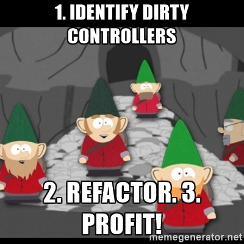

Slideshow made with RevealJS.
Quick tips:
- Arrows for navigation
- "O" for overview
- "S" for speaker notes
AngularJS*
toolset to extend HTML
* version 1.x
WHY
Cons
- Paradigm change about markup
- Unintuitive to debug when unfamiliar
- Need to have a good handle on prototypal inheritance
Cons
- Paradigm change about markup
- Unintuitive to debug when unfamiliar
- Need to have a good handle on prototypal inheritance
Pros
- Easy to get started & onboard new engineers
- Quicker implementation of complex features
- It's a google project (long-term support)
- Great testability
So we know frameworks.
Isn't angular somewhat like that?
Nope. It's more like a pile of legos.
AngularJS is a
toolset
to extend HTML
RECAP
HOW
Easy as 1-2-3!
1. Add angular js to your project.
2. Instantiate a module in your js
var app = angular.module('awesomeSauceApp', []);
3. Add `ng-app` attribute to html
<body ng-app='awesomeSauceApp'>
<!-- awesome sauce recipes -->
</body>
COMPONENT TYPES
views
controllers
directives
services
There are a few more, and more details - check out official conceptual overview
VIEWS
represent visible part of the application
declare bindings & directives
Example:
<body ng-app='mhTrackerList'>
<mh-navbar></mh-navbar>
<div ng-controller='MainCtrl'>
Here is a list of trackers for {{ user.name }}
<div class='container'>
<mh-fancy-frame ng-repeat="tracker in trackers | filter:q as results">
<div class='mh-user-tracker' data-tracker='tracker'></div>
</mh-fancy-frame>
</div>
</div>
<footer ng-include="'footer.html'"></footer>
</body>
- Looking at a template, it shouldn't feel cluttered and should give you an idea of what the app does (without details of implementation)
- Think declaratively: set state in JS, hide/show bits based on state (as opposed to controller manipulating DOM directly)
concept:
$scope
Think of it as jQuery
$(element).data() on steroids.
It belongs to a single html element - and one element only has one $scope.
Docs have a pretty good overview & examples of $scope
debugging tips:
you can easily access any scope in JS console, like so:
// First, select element in elements panel. Then, in JS console:
$0 // => element itself
angular.element($0).scope() // => associated scope, if there is one
Also, web inspector plugin for chrome is pretty handy.
$scope is
JS context of an
angular element
RECAP
CONTROLLERS
set up the
$scope
manage view interactions
give any existing html element superpowers
Example:
in JS, register a controller:
app.controller('SauceCtrl', function($scope) {
$scope.flavor = 'Strawberry';
$scope.tasteSauce = function() {
// cause intense gastronomical pleasure
console.log('Tasting happened.')
}
});
Then in HTML, just add it with ng-controller tag:
<div ng-controller='SauceCtrl'>
<button ng-click='tasteSauce()'>Taste {{ flavor }} Sauce</button>
</div>
controller code smell:
- does it do more than just coordinate view & model?
- does it have too many collaborators (dependencies)? Over 3 or 4 is too many (increases coupling).
- is it testable? (would it need many mocks? would it be tricky to test because of DOM manipulation?)

Strategies to clean up:
- evaluate if controller is managing too big a chunk of the page & cut it up into smaller bits
- create facade services that aggregate & abstract away the use of some dependencies necessary for a related task
Controllers
JS functions containing
user interaction logic
RECAP
concept:
dependency
injection
check out wikipedia for detailed description
Example:
MI6 might depend on built-in services like `$location` - and some custom ones:
angular.module('great_britain', [])
.controller('MI6', function($location, unlimitedAmmo, teleportationService, astonMartinService) {
// ...
})
Gotcha: minification can catch you out:
With injected services, minifiers won't know to properly keep track variable names. There are a couple of options to make your code minifier-safe.
Check out the docs & pick the syntax you prefer.
DIRECTIVES
Decorator directives
give existing elements superpowers
suppose we want an easy way to replace everything with 'YO'
<body yo>
// all the things will get replaced with "YO"
</body>
In JS, define the directive:
app.directive('yo', function() {
return {
restrict: 'A',
link: function(scope, element, attrs) {
element.innerHTML = 'YO';
}
}
})
There are actually two link functions, read on for more info
Component directives
reusable snippets of html + logic
suppose we want an easy way to add an annoying button to the page
<annoy></annoy>
In JS, define the directive:
app.directive('annoy', function() {
return {
restrict: 'E',
template: ''
controller: function($scope) {
$scope.annoyed = false;
$scope.annoy = function() {
alert('you have been annoyed.');
$scope.annoyed = true;
};
}
}
})
Component directives: transclusion
"picture-frame" directives to surround some content with some other content.
app.directive('fancyFrame', function() {
return {
restrict: 'E',
template: '/templates/fancy_frame.html',
transclude: true,
controller: FancyFrameCtrl
}
})
e.g. surround element with list tag:
<li class='fancy-frame'>
<ng-transclude></ng-transclude>
</li>
Structural directives
e.g. ng-repeat, ng-if

ACTUALLY modify the DOM.
Directives + $scope
Very detailed explanation in angular wiki on github
shared scope
Default behavior, shares scope with closest parent with defined scope

inherited scope
Inherits scope from closest parent with defined scope via prototypal inheritance
app.directive('myFancyDir', function() {
return {
restrict: 'E',
template: '/templates/fancy_dir.html',
scope: true
}
})
isolate scope
Isolated scope. Expose parent attributes manually.
app.directive('myFancyDir', function() {
return {
restrict: 'E',
template: '/templates/fancy_dir.html',
scope: {}
}
})
Note: closest parent scope is available as $scope.$parent - but no inheritance is set up.
isolate scope: exposing attrs
app.directive('myFancyDir', function() {
return {
restrict: 'E',
template: '/templates/fancy_dir.html',
scope: {
parentAttribute: '=', // sets up two-way binding with passed-in parent attr
parentAttribute2: '=customName', // like above, but renames it to 'customName'
simpleValue: '@', // simple value param- only strings, one-way binding
functionFromParentScope: '&'
}
}
})
Then, in HTML we would use it like this:
<my-fancy-dir
parent-attribute='thing_from_parent_scope'
custom-name='thing_from_parent_that_gets_set_to_parentAttribute2'
simple-value='true' // for dynamic attrs, have to use {{ }} to just get the string value
function-from-parent-scope='removeFriend(friend)'>
</my-fancy-dir>
Directives
functions tied to DOM elements
potentially with associated HTML
RECAP
concept:
angularJS events
Example:
Subscribe with $scope.$on():
app.controller('myCtrl', function($scope) {
$scope.on('my_event', function(event, data) {
// do stuff with event or data
});
})
emit with $scope.$emit():
app.controller('myCtrl', function($scope) {
$scope.$emit('my_event', { whatever: 'data I want to send up the hierarchy'});
})
broadcast with $scope.$broadcast():
app.controller('myCtrl', function($scope) {
$scope.$broadcast('my_event', { some_other_date: 'down the hierarchy'});
})
SERVICES
Instantiation:
Just use these:
app.factory('sharedLogicService', function() {});
app.value('sharedDataService', {})
There are a few more specialized ones:
app.service('name', function() {})
app.filter('name', function() {});
app.constant('name', value);
$provide.provider('name', function() {})
see notes for differences, but for most use cases first two are sufficient
Business logic
Suppose we wanted a way to convert imperial/metric units. It's easy to imagine a case where we would want to share that functionality between different components on a page. You could implement it in a similar manner:
app.factory('unitService', function() {
return {
convert: function(value, unit) {
var conversionFactors = { 'kg': 2.20462, 'lb': 0.453592 };
return Math.round(value * conversionFactors[unit]*100))/100;
}
}
});
Then, in our controller, we could inject the service as a dependency - and use it at will:
app.controller('RecipeCtrl', function(unitService, spyService) {
var enemy_kitchen = spyService.infiltrateEnemyKitchen();
var raw_recipe_data = spyService.stealRecipes(enemy_kitchen);
var secret_ingredient_amount = unitService.convert(raw_recipe_data['sauce'], 'kg');
})
State management
NB: Services are singletons, so they are perfect for keeping track of transient aspects of app state
Here's a slightly simplified real-life example a service that keep track of multiple places on a page where user can select a date:
app.service('selectedDateService', function($rootScope) {
function getSelectedDate(dateType) {
return dates[dateType];
}
function setSelectedDate(date, dateType) {
dates[dateType] = date;
$rootScope.$broadcast("DATE_CHANGED_" + dateType, date);
}
var dates = {};
return {
setSelectedDate: setSelectedDate,
getSelectedDate: getSelectedDate
};
});
Note we're injecting $rootScope, and making use of events - in our use case, some components of the page needed to react to date change, but we did not want to expose ability to change date to these passive components
Communication services
Another use for services is for individual functions. Example of that would be $resource service, that makes it trivial to connect to restful APIs:
app.factory('users', function($resource) {
return $resource('/users/:id', {id:'@id'});
})
Then, in our controller we can fetch a list of users, a single user, or do CRUD actions on a user:
app.controller('MainCtrl', function($scope, users) {
$scope.user = users.get({id:123}); // this will return a promise & make an ajax GET request.
// let's assume saveUser gets called by user, e.g. by clicking a button
function saveUser(data) {
$scope.user.data = data;
$scope.user.$save(); // this will make an ajax UPDATE request.
}
});
Special service: filters
A filter in AngularJS is a service that is typically used to modify interpolated values directly in the view (but can be used in JS as well).
Injection gotcha: it's defined with a name, but injected with Filter suffix
Filter service must return a function (which gets passed in whatever is "filtered")
app.filter('kimi', function() {
return function(input) {
return 'Bwoah ' + input + ' itsthesameforeverybody';
}
})
Then, in the view you could use it like this:
<span>{{ 'it's just racing' | kimi }}</span>
<!-- the above will render like this: -->
<span>Bwoah it's just racing itsthesameforeverybody</span>
Services
hold app state
non-view logic
RECAP
COMMUNICATION
via $scope
via events
via services
via $scope: cons
- All the things that need to be communicated about need to be on parent scope (not very OO)
- Logic about interactions between child directives ends up living on the parent
- Tight coupling between your child dirs & parent dir
- As app grows, name conflicts or inadvertent changes from mysterious places
- Hard to count the dependencies of a controller as it may also depend on services injected into parent directive
via $scope: cons
- All the things that need to be communicated about need to be on parent scope (not very OO)
- Logic about interactions between child directives ends up living on the parent
- Tight coupling between your child dirs & parent dir
- As app grows, name conflicts or inadvertent changes from mysterious places
- Hard to count the dependencies of a controller as it may also depend on services injected into parent directive
via $scope: pros
+ EASY to get started
via events: cons
- no direct way to communicate with siblings
- event can be listened to by anyone (and canceled by anyone)
- Events are a form of global
- Event names are strings (potential for conflicts)
via events: cons
- no direct way to communicate with siblings
- event can be listened to by anyone (and canceled by anyone)
- Events are a form of global
- Event names are strings (potential for conflicts)
via events: pros
+ Logic can live in the appropriate controllers
via services: cons
- More setup work
- More mental effort to differentiate business logic from view logic
via services: cons
- More setup work
- More mental effort to differentiate business logic from view logic
via services: pros
+ Injected only where needed
+ Being singletons, state is shared
+ Abstracts away the business logic, controllers can be more declarative